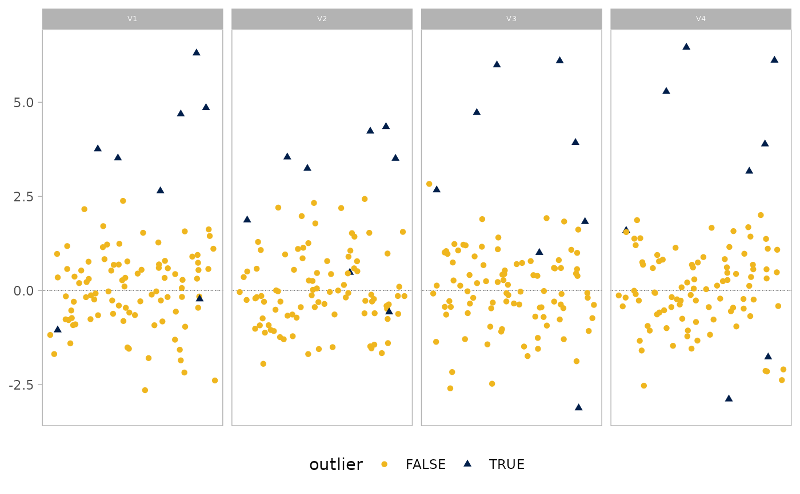
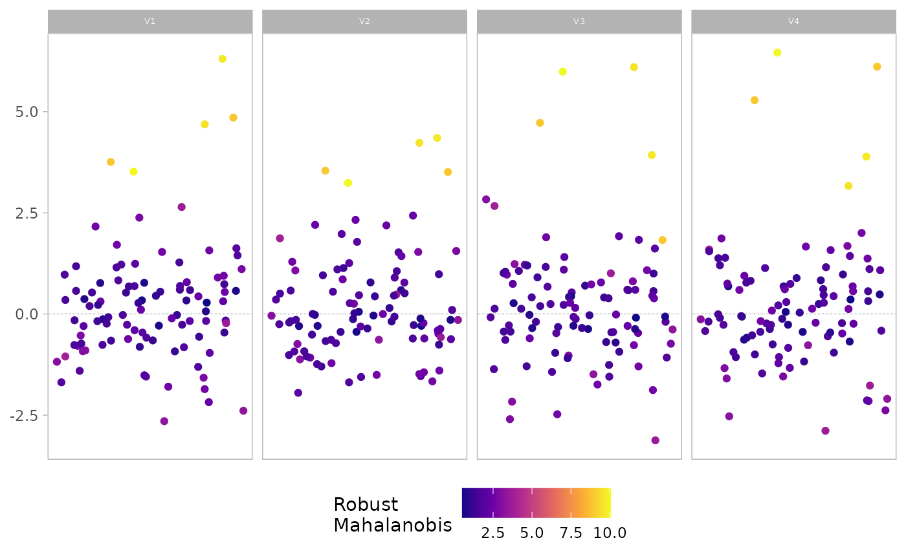
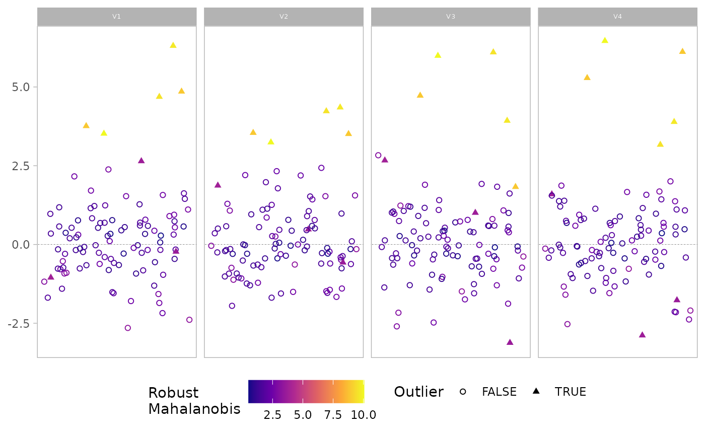

This function creates a visual representation of multivariate outliers using a univariate plot.It uses robust covariance estimation methods to identify outliers and provides options for displaying the results through various plotting styles.
Arguments
- x
A matrix or data frame.
- quan
A numeric value, between 0.5 and 1, that specifies the amount of observations which are used for MCD estimations. Default is 0.5.
- alpha
A numeric value specifying the amount of observations used for calculating the adjusted quantile. Default is 0.025.
- show.outlier
A logical value, if
TRUE(default), outliers are highlighted in the plot.- show.mahal
A logical value, if
FALSE(default), robust Mahalanobis distances are not color-coded in the plot.
Value
Depending on the combination of show.outlier and show.mahal:
A
ggplotobject with outliers highlighted (ifshow.outlier = TRUE)A
ggplotobject with Mahalanobis distances color-coded (ifshow.mahal = TRUE)A
ggplotobject combining both outlier highlighting and Mahalanobis distance color-coding (if bothshow.outlierandshow.mahalareTRUE)A tibble containing standardized scores, outlier flags, and robust multivariate Mahalanobis distances (if both
show.outlierandshow.mahalareFALSE)
Details
The function uses the Minimum Covariance Determinant (MCD) method to compute robust estimates
of location and scatter. It then applies an adaptive reweighting step to further improve
the outlier detection. The results are visualized using ggplot2, with options to highlight
outliers and/or color-code points based on their Mahalanobis distances.
Examples
set.seed(1)
x <- matrix(rnorm(100 * 4), ncol = 4, dimnames = list(NULL, paste0("V", 1:4)))
x[1:5, ] <- x[1:5, ] + 4 # five multivariate outliers
# Basic usage with default parameters
plot_outliers(x)

# Adjust the proportion of observations used for MCD estimation
plot_outliers(x, quan = 0.75)
 # Show Mahalanobis distances instead of outlier highlighting
plot_outliers(x, show.outlier = FALSE, show.mahal = TRUE)
# Show Mahalanobis distances instead of outlier highlighting
plot_outliers(x, show.outlier = FALSE, show.mahal = TRUE)

# Combine outlier highlighting and Mahalanobis distance color-coding
plot_outliers(x, show.outlier = TRUE, show.mahal = TRUE)

# Return data frame instead of plot
result_df <- plot_outliers(x, show.outlier = FALSE, show.mahal = FALSE)
head(result_df)
#> # A tibble: 6 × 6
#> V1 V2 V3 V4 outlier mahalanobis
#> <dbl> <dbl> <dbl> <dbl> <lgl> <dbl>
#> 1 3.76 3.54 4.72 5.28 TRUE 8.91
#> 2 4.69 4.23 6.10 3.17 TRUE 9.53
#> 3 3.52 3.24 5.99 6.46 TRUE 10.1
#> 4 6.31 4.35 3.93 3.89 TRUE 9.69
#> 5 4.85 3.51 1.83 6.11 TRUE 8.93
#> 6 -1.05 1.87 2.67 1.59 TRUE 3.82